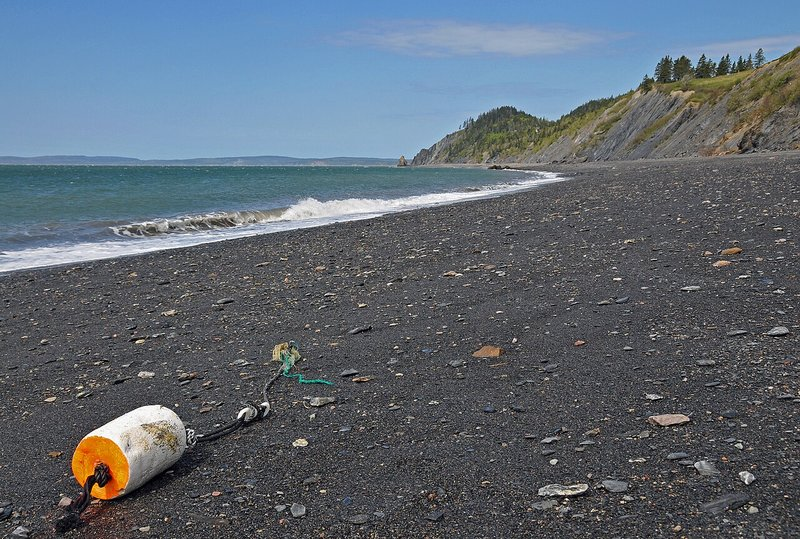
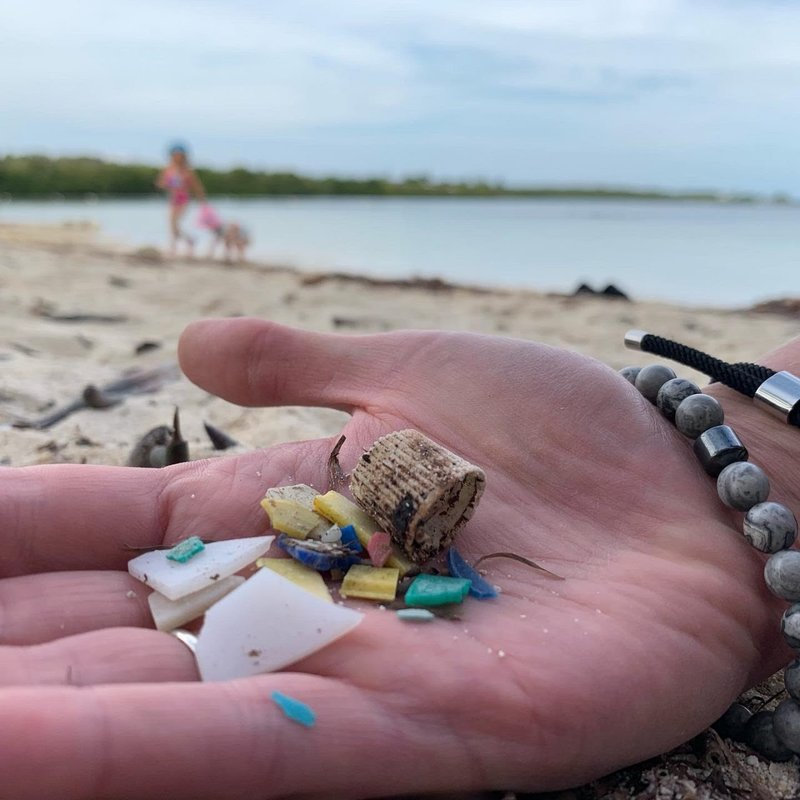

5 大類分類
把兩百種海廢整理成五章。每一章對應一種人類行為——飲料、食物、漁業、衛生、其他。
RE-THINK 海廢圖鑑收錄了 151 件被人從海邊撿到的東西，乍看令人眼花撩亂。但只要把它們按「為什麼會出現在海邊」歸類，就會發現一切都指向陸地上的某種習慣——喝飲料、吃外帶、做漁業、抽煙、其他。下面五章節，從台灣最常見排到最特殊。
Why these 5 · 為什麼這樣分從「丟」回推到「習慣」
如果只看垃圾本身，海廢看起來千奇百怪。但只要問一個問題——「這東西為什麼會出現在這裡？」——所有的混亂都會收斂到五種人類行為。
這也是國際 ICC 標準的設計邏輯：分類不是讓垃圾各歸其位，而是讓減量行動有方向。寶特瓶最多就從不買瓶裝水做起；漁網最多就從友善漁業著手。分類是減量的地圖。
從第 1 章開始

飲料容器
寶特瓶、鋁罐、紙杯、瓶蓋。台灣海廢前 5 名的常客， 來自每一杯外帶飲料、每一支隨手丟的瓶蓋。
進入第 1 章 →
食物包裝
塑膠袋、吸管、餐具、便當盒。「外帶 + 一次性」的代價—— 幾分鐘的方便，留給海洋幾百年的功課。
進入第 2 章 →
漁業用具
網、繩、浮球、保麗龍。對動物殺傷力最大的一類， 也是安平海岸的特色——蚵棚每年丟出 6 萬顆白色浮具。
進入第 3 章 →
個人衛生與危險
菸蒂、口罩、針筒、破玻璃。淨灘時最需要小心的一類—— 絕對不能徒手撿，要先告訴老師。
進入第 4 章 →
其他與微塑膠
看不出原貌的碎片、沒有專屬欄位的雜物， 還有肉眼幾乎看不見、但已經進到食物鏈裡的微塑膠。
進入第 5 章 →